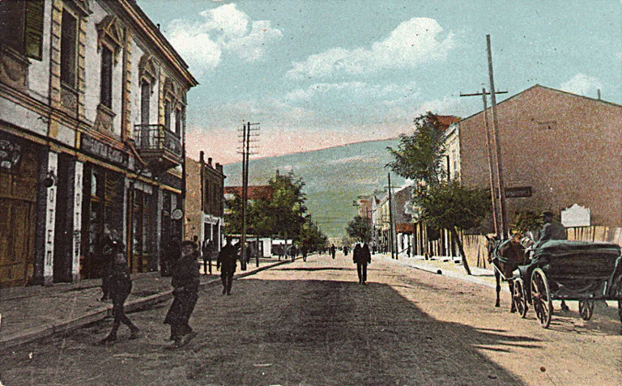
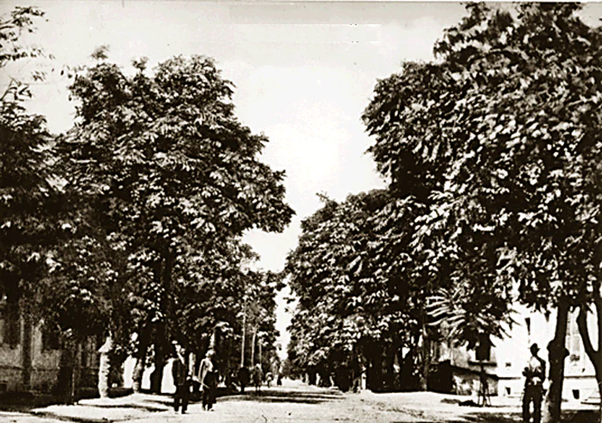
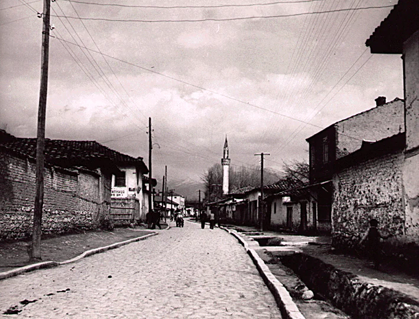

Grüner Markt
- Produktion
- UFUŽ und Dokumentarfilm Prag
- Drehbuch und Regie
- Slavko Janevski und EMAN CANERA
- Jahr
- 1959
- Dauer
- 00:18

Christliche Häuser in Skopje - 1870.

Ein Teil des alten Basars von Skopje, 1902. Eine Reihe von Läden mit Fensterläden vor dem Kuršumli-Han. Im Hintergrund der Turm des Gülşen-Hamams.

Die Hauptstraße während ihrer Entstehung (heute die Straße „Makedonija“, die vom heutigen Museum der Stadt Skopje zur Steinbrücke führt). Rechts die Katholische Kirche im gotischen Stil sowie einzelne Gebäude auf der linken Seite. Der Abschnitt an der Steinbrücke wurde 1911 gepflastert, damit Sultan Murad V. passieren konnte, der Skopje vor seiner Reise zum Amselfeld besuchte.

Das Foto wurde vom Gebäude des alten Bahnhofs aufgenommen - dem heutigen Museum der Stadt Skopje -, der 1873 in der Zeit des Osmanischen Reiches erbaut wurde. Im Vordergrund die Zufahrt zum Bahnhof mit eingezäunten Grünflächen. Daran schließt die Hauptstraße zum Platz an. Am Anfang der Straße links das Hotel „Rusija“.

Blick auf die Hauptstraße „Makedonija“. Das Tor wurde zu Ehren eines wichtigen Gastes errichtet. Links davon das Hotel „Rusija“. - Anfang des 20. Jahrhunderts.

Die Hauptstraße mit dem Hotel „Moskva“ - 1920er Jahre

Die Hauptstraße, heute Makedonija, die vom heutigen Museum der Stadt Skopje zum Platz führt. Am Ende der Straße das Offiziersheim, rechts davon die Wirtschafts- und Handelskammer - 1930er Jahre.

Die Hauptstraße, fotografiert in Richtung des heutigen Museums der Stadt Skopje - um 1920.

Die Hauptstraße (heute Makedonija), vom Platz zum Bahnhof hin - um 1920.

Die Hauptstraße Makedonija, vom heutigen Museum der Stadt Skopje zum Platz hin. Links das Hotel Bristol, rechts ist der Krang-Palast zu sehen. (1930er Jahre)

Die Hauptstraße, die vom heutigen Museum der Stadt Skopje zum Platz führt. Aufgenommen beim heutigen Hotel „Bristol“ und dem Krang-Palast. Im Hintergrund ist das Offiziersheim zu sehen - um 1935.

Die Hauptstraße, die vom heutigen Museum der Stadt Skopje zum Platz führt. Das Eckgebäude ist der Krang-Palast - 1930er Jahre.

Krang-Palast. - 1930er Jahre.

Die Straße am Kai auf der rechten Seite des Vardar. - 1930er Jahre

Eine Straße im alten Teil der Stadt zum alten Basar hin - Ende des 19. Jahrhunderts.

Die Straße von der Steinbrücke zum alten Basar. - 1920er Jahre

Eine Straße im alten Teil der Stadt, zum Viertel Čair hin. Im Vordergrund ein Kutschenstand und der alte türkische Brunnen. Im Hintergrund Gebäude in alter Volksarchitektur - 1920er Jahre.

Die Steinbrücke zum alten Basar hin. Links eine Reihe von Läden, rechts das Haus des Zahnarztes Dr. Ruben und eine Reihe von Läden zum alten Basar hin - um 1935.

Die Straße „Kruševska“ im Viertel Pajko, 1920er Jahre.

Diese Straße gibt es heute nicht mehr. Sie verlief parallel zur Hauptstraße, vom Platz zum alten Bahnhof (heute Museum der Stadt Skopje) - 1920er Jahre

Die Hauptstraße (heute „Makedonija“) - 1920er Jahre.

Eine Straße im alten Basar von Skopje. Im Hintergrund die Mustafa-Pascha-Moschee. - 1930er Jahre

Eine Straße im alten Basar von Skopje. Im Hintergrund ist die Mustafa-Pascha-Moschee zu sehen. - 1930er Jahre

Die Straße „Cvetan Dimov“ im Viertel Čair, 1940er Jahre. Im Hintergrund ist die Mehmed-Pascha-Moschee zu sehen.

Skopje, 1950er Jahre. Der Eingang zum alten Basar von Skopje - Standort des Kaufhauses „Most“. Im Vordergrund eine Gruppe von Läden, die nach dem Erdbeben von 1963 abgerissen wurden. Links ein Teil der Festung von Skopje - Kale. Im Hintergrund die Mustafa-Pascha-Moschee.

Der kleine Platz im alten Basar von Skopje, 1950er Jahre.

Die Straße 11. Oktober, vom Platz in Richtung des heutigen Parlaments der R. Mazedonien fotografiert. Im Hintergrund das alte Gebäude der Verwaltung für innere Angelegenheiten. - 1950er Jahre

Die Straße 11. Oktober mit dem Parlament der R. Mazedonien auf der linken Seite. Links ist auch der mittelalterliche Turm zu sehen. Im Hintergrund des Fotos ein Teil des Gebäudes der alten Post. - Ende der 1950er Jahre

Die Straße „Goce Delčev“, vom Platz aus fotografiert. Links im Vordergrund ein Teil des Hotels „Makedonija“, das beim Erdbeben von 1963 einstürzte. - 1950er Jahre

Die Hauptstraße zum Platz hin. Im Vordergrund die Katholische Kirche. - 1950er Jahre

Die Hauptstraße in Richtung Bahnhof (heute Museum der Stadt Skopje). Links ist die Katholische Kirche zu sehen. - 1950er Jahre

Die Hauptstraße „Makedonija“ zum Platz hin. - 1950er Jahre

Skopje, 1950. Der westliche Teil der Hauptstraße. Links das Hotel „Moskva“.

Im Vordergrund die Kreuzung der Straße 11. Oktober mit dem Kočo-Racin-Boulevard. Rechts vom Turm, der im Bau ist, die alte Militärbäckerei aus dem Ersten Weltkrieg - 1950er Jahre

Die Kreuzung des Kočo-Racin-Boulevards mit der Straße 11. Oktober. - 1950er Jahre

Die Straße am Stadtkrankenhaus und an der Arbeiteruniversität - 1950er Jahre

Die Straße 11. Oktober - Ende der 1970er Jahre, zum Platz „Makedonija“ hin.

Blick von der Straße 11. Oktober zum Platz „Makedonija“. Links Wohnhäuser, rechts das Gebäude der Elektrizitätswirtschaft. - Ende der 1970er Jahre

 Aquädukt4 Postkarten
Aquädukt4 Postkarten Kale30 Postkarten
Kale30 Postkarten Brücken60 Postkarten
Brücken60 Postkarten Kai58 Postkarten
Kai58 Postkarten Platz46 Postkarten
Platz46 Postkarten Bauten66 Postkarten
Bauten66 Postkarten Christliche Gotteshäuser19 Postkarten
Christliche Gotteshäuser19 Postkarten Muslimische Bauten33 Postkarten
Muslimische Bauten33 Postkarten Offiziersheim29 Postkarten
Offiziersheim29 Postkarten Theater28 Postkarten
Theater28 Postkarten Bahnhof13 Postkarten
Bahnhof13 Postkarten Schulen36 Postkarten
Schulen36 Postkarten Parks12 Postkarten
Parks12 Postkarten Märkte18 Postkarten
Märkte18 Postkarten Straßen38 Postkarten
Straßen38 Postkarten Panorama I60 Postkarten
Panorama I60 Postkarten Panorama II30 Postkarten
Panorama II30 Postkarten Collagen55 Postkarten
Collagen55 Postkarten Hochwasser9 Postkarten
Hochwasser9 Postkarten Erdbeben27 Postkarten
Erdbeben27 Postkarten Skopje 200026 Postkarten
Skopje 200026 Postkarten